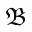
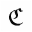
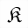
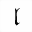

| Name | Unicode | Glyph | Unicode Name | Description | Aliases |
|---|
| afr | U+1D51E |  | MATHEMATICAL FRAKTUR SMALL A | /frak a, lower case a | |
| Afr | U+1D504 |  | MATHEMATICAL FRAKTUR CAPITAL A | /frak A, upper case a | |
| bfr | U+1D51F |  | MATHEMATICAL FRAKTUR SMALL B | /frak b, lower case b | |
| Bfr | U+1D505 |  | MATHEMATICAL FRAKTUR CAPITAL B | /frak B, upper case b | |
| cfr | U+1D520 |  | MATHEMATICAL FRAKTUR SMALL C | /frak c, lower case c | |
| Cfr | U+212D |  | BLACK-LETTER CAPITAL C | /frak C, upper case c | Cayleys |
| dfr | U+1D521 |  | MATHEMATICAL FRAKTUR SMALL D | /frak d, lower case d | |
| Dfr | U+1D507 |  | MATHEMATICAL FRAKTUR CAPITAL D | /frak D, upper case d | |
| efr | U+1D522 |  | MATHEMATICAL FRAKTUR SMALL E | /frak e, lower case e | |
| Efr | U+1D508 |  | MATHEMATICAL FRAKTUR CAPITAL E | /frak E, upper case e | |
| ffr | U+1D523 |  | MATHEMATICAL FRAKTUR SMALL F | /frak f, lower case f | |
| Ffr | U+1D509 |  | MATHEMATICAL FRAKTUR CAPITAL F | /frak F, upper case f | |
| gfr | U+1D524 |  | MATHEMATICAL FRAKTUR SMALL G | /frak g, lower case g | |
| Gfr | U+1D50A |  | MATHEMATICAL FRAKTUR CAPITAL G | /frak G, upper case g | |
| hfr | U+1D525 |  | MATHEMATICAL FRAKTUR SMALL H | /frak h, lower case h | |
| Hfr | U+210C |  | BLACK-LETTER CAPITAL H | /frak H, upper case h | Poincareplane |
| ifr | U+1D526 |  | MATHEMATICAL FRAKTUR SMALL I | /frak i, lower case i | |
| Ifr | U+2111 |  | BLACK-LETTER CAPITAL I | /frak I, upper case i | image, Im, imagpart |
| jfr | U+1D527 |  | MATHEMATICAL FRAKTUR SMALL J | /frak j, lower case j | |
| Jfr | U+1D50D |  | MATHEMATICAL FRAKTUR CAPITAL J | /frak J, upper case j | |
| kfr | U+1D528 |  | MATHEMATICAL FRAKTUR SMALL K | /frak k, lower case k | |
| Kfr | U+1D50E |  | MATHEMATICAL FRAKTUR CAPITAL K | /frak K, upper case k | |
| lfr | U+1D529 |  | MATHEMATICAL FRAKTUR SMALL L | /frak l, lower case l | |
| Lfr | U+1D50F |  | MATHEMATICAL FRAKTUR CAPITAL L | /frak L, upper case l | |
| mfr | U+1D52A |  | MATHEMATICAL FRAKTUR SMALL M | /frak m, lower case m | |
| Mfr | U+1D510 |  | MATHEMATICAL FRAKTUR CAPITAL M | /frak M, upper case m | |
| nfr | U+1D52B |  | MATHEMATICAL FRAKTUR SMALL N | /frak n, lower case n | |
| Nfr | U+1D511 |  | MATHEMATICAL FRAKTUR CAPITAL N | /frak N, upper case n | |
| ofr | U+1D52C |  | MATHEMATICAL FRAKTUR SMALL O | /frak o, lower case o | |
| Ofr | U+1D512 |  | MATHEMATICAL FRAKTUR CAPITAL O | /frak O, upper case o | |
| pfr | U+1D52D |  | MATHEMATICAL FRAKTUR SMALL P | /frak p, lower case p | |
| Pfr | U+1D513 |  | MATHEMATICAL FRAKTUR CAPITAL P | /frak P, upper case p | |
| qfr | U+1D52E |  | MATHEMATICAL FRAKTUR SMALL Q | /frak q, lower case q | |
| Qfr | U+1D514 |  | MATHEMATICAL FRAKTUR CAPITAL Q | /frak Q, upper case q | |
| rfr | U+1D52F |  | MATHEMATICAL FRAKTUR SMALL R | /frak r, lower case r | |
| Rfr | U+211C |  | BLACK-LETTER CAPITAL R | /frak R, upper case r | real, Re, realpart |
| sfr | U+1D530 |  | MATHEMATICAL FRAKTUR SMALL S | /frak s, lower case s | |
| Sfr | U+1D516 |  | MATHEMATICAL FRAKTUR CAPITAL S | /frak S, upper case s | |
| tfr | U+1D531 |  | MATHEMATICAL FRAKTUR SMALL T | /frak t, lower case t | |
| Tfr | U+1D517 |  | MATHEMATICAL FRAKTUR CAPITAL T | /frak T, upper case t | |
| ufr | U+1D532 |  | MATHEMATICAL FRAKTUR SMALL U | /frak u, lower case u | |
| Ufr | U+1D518 |  | MATHEMATICAL FRAKTUR CAPITAL U | /frak U, upper case u | |
| vfr | U+1D533 |  | MATHEMATICAL FRAKTUR SMALL V | /frak v, lower case v | |
| Vfr | U+1D519 |  | MATHEMATICAL FRAKTUR CAPITAL V | /frak V, upper case v | |
| wfr | U+1D534 |  | MATHEMATICAL FRAKTUR SMALL W | /frak w, lower case w | |
| Wfr | U+1D51A |  | MATHEMATICAL FRAKTUR CAPITAL W | /frak W, upper case w | |
| xfr | U+1D535 |  | MATHEMATICAL FRAKTUR SMALL X | /frak x, lower case x | |
| Xfr | U+1D51B |  | MATHEMATICAL FRAKTUR CAPITAL X | /frak X, upper case x | |
| yfr | U+1D536 |  | MATHEMATICAL FRAKTUR SMALL Y | /frak y, lower case y | |
| Yfr | U+1D51C |  | MATHEMATICAL FRAKTUR CAPITAL Y | /frak Y, upper case y | |
| zfr | U+1D537 |  | MATHEMATICAL FRAKTUR SMALL Z | /frak z, lower case z | |
| Zfr | U+2128 |  | BLACK-LETTER CAPITAL Z | /frak Z, upper case z | zeetrf |